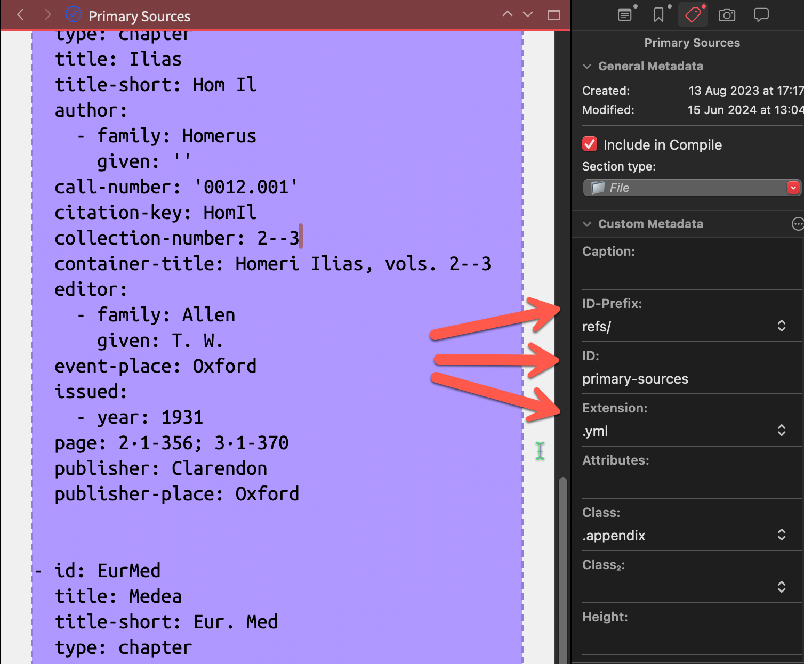

To use ScrivQ24, you need the Quarto open-source scientific and technical publishing system.
Quickstart
On macOS1, use Homebrew to brew install quarto && brew install chromium.
On Windows, use Chocolatey to choco install quarto.
After that, install TinyTex with quarto install tool tinytex.
1 If you’re on a Mac, install Homebrew by pasting the following on the Terminal: /bin/bash -c "$(curl -fsSL https://raw.githubusercontent.com/Homebrew/install/HEAD/install.sh)".
The ScrivQ template is designed to compile Quarto Books (PDF2, DOCX, and HTML) with zero configuration and no dependencies on external files. The bibliography, the template files, extensions, and filters are all included in the project and will be created by the compiler script.
2 Please note that tinytex is also required for LaTeX to PDF output.
When Quarto is installed…
Hit Cmd + Opt + E to publish your Quarto Book right away.
Figure 1: There is a ruby script to reformat the text and create the dependencies. It allows you to pass a file name and a format, so you can edit the post-processing panel to change the output format (e.g. change html to pdf / docx / epub etc.). It is embedded in this project’s Compiler format.
The script’s output is redirected &> to a Quarto.log file that will be automatically opened when an error happens and no output is produced. If everything runs smoothly, however, you should see only the output file open.
This compiler script descends from Scrivomatic, but with several changes to allow splitting the final document into sub-files. This task entails some challenges as footnotes and image references must be moved around before the file is split. Check the compiler script to see how this got solved and please report any errors.
“I propose a toast, to my self-control. You see it helpless, crawling on the floor.” Morphine, Cure For Pain (1993)
In ScrivQ, we use Citeproc to handle the bibliography and provide consistent output across different formats. Given Citeproc’s lack of features beloved by BibTeX users, we included [Cite Tools] to enable multipart bibliographies, provide backlinks (see backref from HyperRef), and access bibliographic data from sources (author, editor, translator, date, edition, number, and so on).
Official documentation
The official documentation on citations can be found at Pandoc and Quarto.
Cite Tools needed for ScrivQ
Deleting Cite Tools from ScrivQ will cause the compilation to fail.
Using Cite Tools in other projects
Install it with quarto install extension bcdavasconcelos/citetools.
4.1 Basic citations
The citation syntax is straightforward: @Citekey for Author (Date) (an in-text citation); [@Citekey] for Author, Date; and [-@Citekey] for Date.
The citation key is optionally followed by a locator, which can be a page number, a line number, a chapter number, or a section number, preceded by a comma, e.g.[@Citekey, p.10].
Multiple citations can be grouped in brackets separated by semicolons [@CitekeyA; @CitekeyB]. The CSL style used by Citeproc will determine the presence (or absence) of parenthesis around the rendered citation. (We favor a style that doesn’t use parenthesis, but that is up to you.)
3 The rendered citation will appear only in the output document; but not in the Scrivener project.
Here is a short demonstration of the basic citation feature. We suggest grouping the citations using parenthesis and using character styles to apply the correct markup.
(Date, locator)
Long thinks [...] on the deliberations of the prudent person ([-@Long2004, p.17]).
Long thinks […] on the deliberations of the prudent person (2004, p. 17).
(Author, Date, locator)
...on the deliberations of the prudent person ([@Long2004, p.17]).
To inject the correct markup – [@Citekey]{.csl_field} – and allow us to cite different fields from our bibliographic entry, we rely on Character Styles (e.g.Cite Author, Cite Editor, Cite Issued, and so on).
Aristotle's [@DA]{.original-title} ([@DA]{.title}) was first edited by [@DA]{.editor} in [@DA]{.issued}. In [@DABiehl]{.issued}, there was another edition by [@DABiehl]{.editor} (which was reprinted in [@DATheiler]{.translator}'s [@DATheiler]{.issued} translation).
There is no need to keep separate bibliography files in the system. Copy and paste the data from bibliography managers straight into Scrivener following the instructions below and you will be set!
Bibliography Formats
Pandoc and Quarto use a CSL (Citation Style Language) engine and prefer CSL-YAML and CSL-JSON, performing up to 10x faster, over BibTeX and RIS, which need to be converted before they can be understood.
4 Zotero even offers an API to download shared libraries by merely accessing a link, such as https://api.zotero.org/groups/LibraryID/items?format=bibtex&limit=999 where LibraryID corresponds to the library’s 7-digit code (visible in the middle of the library URL).
4.3.1 How to manually create a multipart bibliography
Using the Section Type File, we create a representation of our bibliography file to add the data (e.g.Primary Sources and Secondary Sources).
On the Metadata panel we set the relative path (ID-Prefix + ID) and the extension (Extension) of the actual bibliography file that will be created upon Compile.

Figure 2: The Metadata panel
We need to tell Quarto about the bibliography file by adding it to the _quarto configuration file (there is a bibliography section), then we can print the formatted bibliography using the ID (e.g. “primary-sources”) with the Paragraph StyleDiv Bibliography.
4.3.2 How to automatically create a multipart bibliography
We can use the Section Type Bibliography to automate steps 3 and 4. This is very convenient for books that need the bibliography to print only once at the very end.
Using the Section Type File, we create a representation of our bibliography file to add the data (e.g.Primary Sources and Secondary Sources).
On the Metadata panel we set the relative path (ID-Prefix + ID) and the extension (Extension) of the actual bibliography file that will be created upon Compile.
The metadata with the file path will be automatically added and the formatted bibliography will be printed in the same section as the data, with the same section title.
4.4 Backlinks
In Citeproc, link-citations control whether citations in the body of the text should be clickable links to the reference in the bibliography. Cite Tools takes it further and adds a backlink to each citation an entry has received in the document in a crescent ordinal fashion5. This allows the reader to easily arrive at sections of the text where the same reference was discussed and quickly see how many times each reference was used with the array of backlinks.
5 The reader will see the page number instead of a crescent ordinal number in some output formats, such as PDF.
Figure 3: The Citation Backlinks filter adds an index of cited references to the bibliography, with links back to all in-text citations. It also allows the user to turn these off globally or in an ad hoc fashion.
Turning off undesired linking
If you want to avoid undesired linking when citing specific fields, turn link-fields into false
Bibliography links
link-citations: Hyperlink citations to the corresponding bibliography entries. Defaults to true.
link-fields: Hyperlink citations targeting specific CSL fields to the corresponding entries in the bibliography. Defaults to true.
link-bibliography: Hyperlink DOIs, PMCIDs, PMID, and URLs in bibliographies. Defaults to true.
lang: Affects the bibliography tags. Defaults to en-US.
5 Quarto
5.1 Scrivener Project Templates
All sorts of internal Scrivener Templates have been included for convenience. They serve as starting points to create new sections. Click Project > New From Template and select the desired Section Types from the list, which includes Bibliography, Code, Computation, Diagram Dot, Diagram Mermaid, Div, Equation, File, Metadata, Section, Text, Text (Anchored)6.
6 Text section with ID for cross-referencing.
This provides a huge number of options as the metadata can be customized to create many Quarto elements. Using the Section TypeDiv, for example, one could create 8 different Amsthm elements, 5 different Callouts, and several Column environments. Using the Computation, one can create executable code blocks with R, Python, and Ruby. The SectionTypeSection can be numbered, unnumbered, or part of the appendix (with the use of classes).
Look at the ready-made examples to see what else is possible.
5.2 Cross-referencing
When a Section is created, select the correct ID-Prefix (e.g.sec-), and fill the ID metadata field with a value (e.g.xref). Then, use Scrivener placeholders, such as @<\$Custom:ID-Prefix><\$Custom:ID> with a link to the cited element, so that this gets replaced with \@sec-xref. This works regardless of the element being cross-referenced (e.g.section, table, figure, listing) because this strategy ensures the citation will use the <\$Custom:ID-Prefix> pulled from the targeted element (e.g.sec-, tbl-, fig-, lst-), making it compatible with all element types.
Link anchor
To be less verbose, we have set up a replacement rule that allows a shorter label to be used as the link anchor.
s\crivlink is replaced with <\$Custom:ID-Prefix><\$Custom:ID>.
s\crivpath and $\! are replaced with <\$Custom:ID-Prefix><\$Custom:ID><\$Custom:Extension>.
Cross-referencing an element
Type your-keyword-of-choice or s\crivlink, select it, and hit Command + L;
Link to the document that contains the table.
Apply a Character Style called Cite.
Known limitation
Scrivener Placeholders can only pull information from the section properties, so this works when we are referencing elements created using Section Types.
When referencing elements created using Raw Markup or a Character Style, we must use the same ID we gave the element (e.g.fig-ulysses) instead of our generic link label (e.g.s\crivlink).
5.3 Amsthm
Table 3: Cross-referencing Amsthm elements in ScrivQ.
Using styles, you can create normal or collapsed callouts.
Caution (collapsed)
This is a Callout Caution using a Paragraph Style.
Caution
This is a Callout Caution using a Paragraph Style.
Caution 1
Demonstration of a Callout Caution using the Section TypeDiv with class .callout-caution and with ID#cau-caution.
Important 1
Demonstration of a Callout Important using the Section TypeDiv with class .callout-important and with ID#imp-important.
Note 1
Demonstration of a Callout Note using the Section TypeDiv with class .callout-note and with ID#nte-note.
Tip 1
Demonstration of a Callout Tip using the Section TypeDiv with class .callout-tip and with ID#tip-tip.
Warning 2
Demonstration of a Callout Warning using the Section TypeDiv with class .callout-warning and with ID#wrn-warning.
5.5 Diagrams
Similarly, we can create Dot and Mermaid diagrams using Section Types (Diagram Dot, Diagram Mermaid), Paragraph Styles (Diagram Dot, Diagram Mermaid), and Raw Mardown.
Table 5: Cross-referencing Dot and Mermaid diagrams.
Figure 5: A graphviz graph with figure reference and caption, using raw markup. See https://quarto.org/docs/authoring/diagrams.html#sizing for more details…
Figure 6: Color wheel diagram
flowchart
A --> B & C & D --> E & F --> G
Figure 7: Figure caption
flowchart LR
A{Diagram} --> B[Section Type]
A --> C[Paragraph Style]
A --> D[Raw Markdown]
Figure 8: Figure caption
%%{init: {"pie": {"textPosition": 0.5}, "themeVariables": {"pieOuterStrokeWidth": "5px"}} }%%
pie showData
title Key elements in Product X
"Calcium" : 42.96
"Potassium" : 50.05
"Magnesium" : 10.01
"Iron" : 5
Figure 9: A Mermaid figure using a Scrivener Section Type [Computation] with class [mermaid], see https://quarto.org/docs/authoring/diagrams.html for more details
(a) Place the label first in the caption, and use the Caption style.
(b) Angry elephant with a big trunk.
Figure 11: This multi-figure panel uses the Section TypeDiv instead of raw markdown as shown here. ID, Class, and Attributes specific to the block [#fig-panel-a .column-body layout-ncol=2 layout-valign="bottom"] are saved to Custom Metadata->ID, Class & Attributes, and then inserted into the markup for this chunk by the Section Layout at compile time.
Table 10: This table with with a passage from John 1.1 uses the Section TypeText and Paragraph StyleTable Caption.
GRC
SKT
ἐν ἀρχὴ ἦν ὁ λόγος
आदौ वाद आसीत्
Table 11: “This is an example of Section TypeTable. The caption and the remaining attributes are added as part of the Section Type markup.”
GRC
SKT
ἐν ἀρχὴ ἦν ὁ λόγος
आदौ वाद आसीत्
Table 12: This is a markdown multi-table panel with two sub-tables generated using a Section TypeDiv. The Custom Metadata holds the cross-referencing label, classes, and other attributes.
(a) The first table of the multipart table panel.
Element
Prefix
Markdown Source
Rendered Output
Equation A
eq
A
B
Equation A
eq
C
D
Listing A
lst
E
F
(b) The second table of the multipart table panel.
Element
Prefix
Markdown Source
Rendered Output
Equation B
eq
A
B
Equation B
eq
C
D
Listing B
lst
E
F
5.10 Sections
Table 13: Note that the unnumbered section cannot be referenced.
Demonstration of the Section TypeSection using Class.unnumbered.
5.10.1 Section
Demonstration of the Section TypeSection with ID#sec-demo-a.
5.10.2 Break + Section
Demonstration of the Section TypeBreak + Section with ID#sec-demo-e.
5.10.3 Heading
5.10.4 Break + Heading
6 Templates and partials
Quarto Templates optionally edited in Scrivener
Users needing control over the parameters in the native Quarto templates shouldn’t have to deal with external files. We imported all the templates and partials for the main file types (TeX, HTML, Typst) so they can be edited directly in Scrivener.
Bootstrap Icons - These are available in Quarto documents using the Shortcode Font Awesome style as in . (There is also Shortcode Env, Shortcode Meta, Shortcode Var).
Compilation fails for LaTeX → PDF when citations are placed in Table/Figure captions. The cause seems to be the Citation Backlinks filter.
For Typst → PDF output some Quarto features (e.g. margin notes, column classes) are not yet implemented. Hopefully this will change in future Quarto versions.